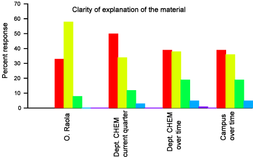

It was important for me to have this positive feedback from the students in this indicator, because at some point during my first quarters teaching at UCSB I was concerned about the clarity of my explanations. I still think there is room for improvement over this issue.